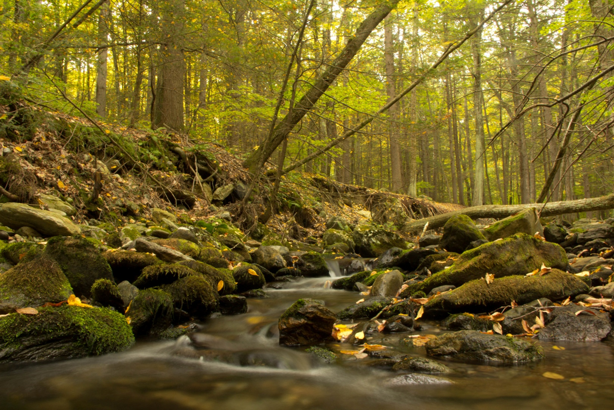

The objective of the clean water act is to 'restore and maintain the chemical, physical and
biological integrity of the Nation's waters.' However, much of the work conducted to date
both around the country and in Connecticut has focused on restoring impaired waters.
More recent work under EPA's healthy watersheds program and
in Connecticut
has begun to bring more emphasis on identifying and protecting high quality waters.
These efforts are needed as preliminary work in Connecticut
noted the possible reduction of taxa highly sensitive to pollution
at long-term sentinel stream monitoring stations over the past ~ 30 years.

Sages Ravine, Salisbury CT
The Biological Condition Gradient (BCG) is a conceptual model that describes changes
in aquatic communities and provides a more refined way of assigning stream health than the
traditional pass/fail approach. The additional fine tuning allows us to identify minimally
stressed healthy streams with sensitive taxa found only under least disturbed conditions
(e.g. BCG tiers 1 and 2).
The map identifies the predicted locations of minimally stressed streams and their upstream drainage
systems that support and protect critical habitat for sensitive and native species using a model
developed using Connecticut fish and macroinvertebrate data. Core forest was found to be a key
factor in maintaining BCG 1 & 2 high quality water conditions. The map allows users to conducted
'what if' scenerios by seeing the loss of high quality waters when the percent core forest is reduced
in a stream's drainage basin.
Additional information on this project and the data included in the map can be found
s
https://github.com/marybecker/HQStreamEval.